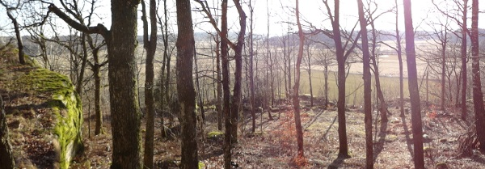

Lat: 57.60616 Long: 12.15728
Kategori:1 stjärna
En trevlig klippa som är väl värd en förmiddag/eftermiddag. Greggered är ett litet samhälle, närmsta mataffären ligger troligen i Lindome.
Närmsta kända busshållplats är Greggereds Kapell, där buss 763 stannar. Restid ifrån Mölndal C är 30-70 minuter.
Ifrån Göteborg, sväng av vid Kållered (Avtagsväg 63), kör rakt fram i första rondellen, sväng vänster kör över motorvägen och rakt fram (österut). Efter ett par kilometer sväng vänster skyltat Greggered.
Alternativ resväg
kör avtagsväg 62 (Lindome S), håll riktning mot Hällesåker. Efter ett tag, sväng vänster Greggered (skyltat).
I Greggered, som är en liten by, ställer du dig på en liten grusplan. Tänk på att bonden som äger den lilla grusplanen vill kunna parkera sin lastbil där.
<googlemap lat="57.60616" lon="12.15728" zoom="9" type="map"> 57.60616,12.15728,Greggered </googlemap>
Lövskog, fin utsikt ifrån hyllan. Inte särskilt framkomligt för barnvagn. För att komma till toppen på berget går man till hyllans högerkant. "Skogen" runt Greggered är rätt liten. Bär med din skit härifrån!
Se till att parkera så att markägaren har plats för sin lastbil. Skada inte stängslet! Det är lyhört mellan klippan och närmsta grannarna, det är nog olämpligt om vi börjar störa dem (ie håll ner ljudvolymen).
Alla lederna på "huvudklippan" är borrbultade. Från Rastafari till Obladi Obladi är denna sektion 20 meter hög.
Innan metallstegen finns dessa två leder:
Gå upp för metallstegen för att komma till hyllan. Det är lätt att med egna grejer bygga topprepsankare för hyllan. Hyllans leder är 15 meter långa, från Mormor till Bänken. Lilla Ekorren och Husmusen är 8 meter.
Kategori:Göteborg
Copyright (C) Permission is granted to copy, distribute and/or modify this document under the terms of the GNU Free Documentation License, Version 1.3